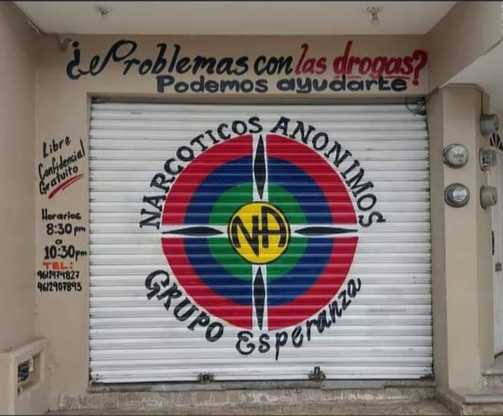
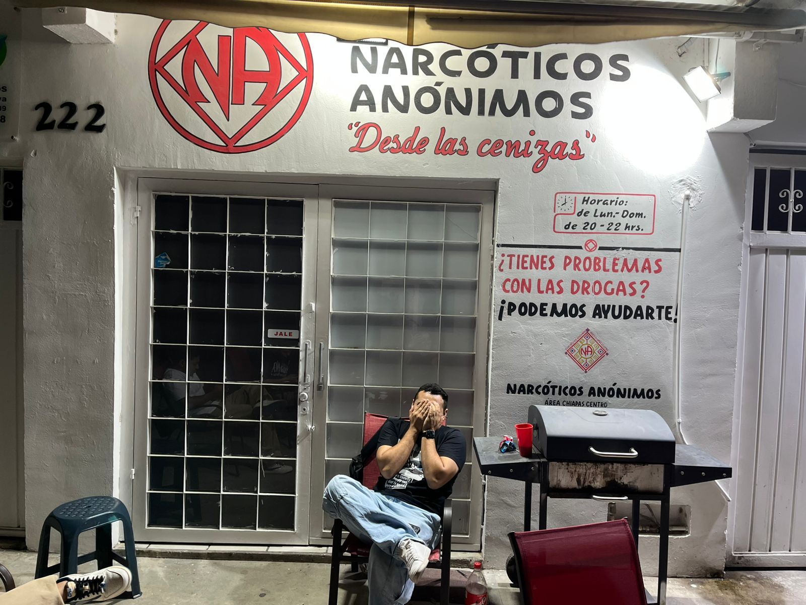
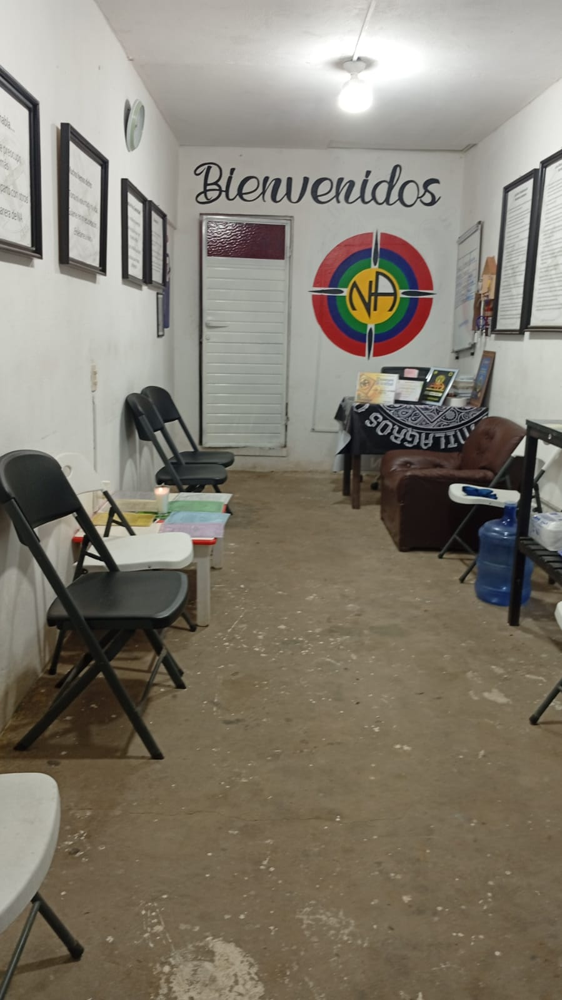
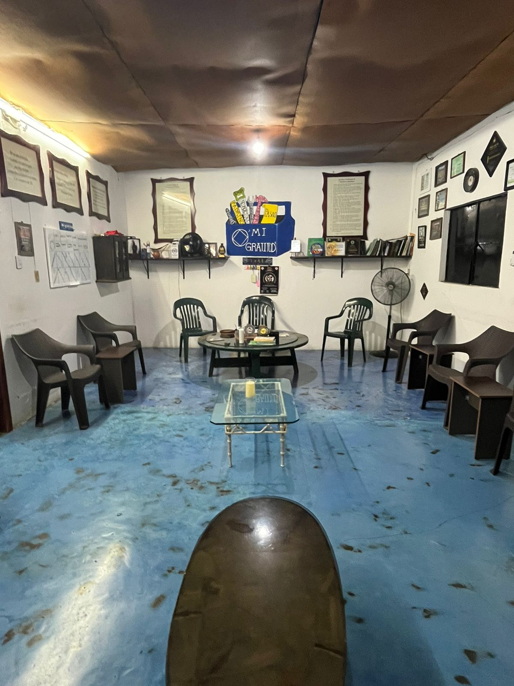
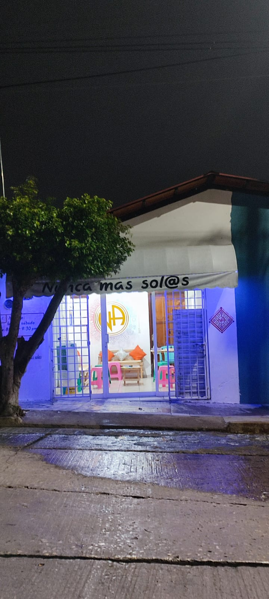

7Buena Voluntad
Tuxtla Gutiérrez
DIR
11a Poniente Sur 456, Col. El Mirador
HOR
Diario · 20:00
TEL
961 012 3456
Narcóticos Anónimos es una comunidad de personas que comparten su experiencia, fortaleza y esperanza para vivir libres del consumo. No hay cuotas. No hay juicios. Solo una puerta abierta — esta es la lista de las que están abiertas cerca de ti.

7Tuxtla Gutiérrez

2Tuxtla Gutiérrez
Tuxtla Gutiérrez

2Tuxtla Gutiérrez

3Tuxtla Gutiérrez
Tuxtla Gutiérrez

3Tuxtla Gutiérrez
Tuxtla Gutiérrez
Tuxtla Gutiérrez
Chiapa de Corzo
Chiapa de Corzo
Berriozábal
Villaflores
Comitán de Domínguez
Prueba borrando los filtros o busca con otro término.
No pasa nada si no quieres hablar. No pasa nada si no sabes qué decir. Llega un poco antes, siéntate donde quieras, y escucha. Eso es todo lo que pedimos.
Mira la lista, encuentra uno por horario o por barrio. Cualquiera está bien — no tienes que escoger "el correcto".
No hay código de vestir, ni cuotas, ni requisitos. Solo el deseo de dejar de consumir.
Al cierre alguien se acercará. Pregunta por un servidor de "bienvenida" o por un padrino temporal.
No es un tratamiento, no es una religión, no es una clínica. Es un grupo de personas que se reúnen periódicamente para ayudarse a permanecer limpias.
Es un programa de recuperación práctico. Se trabajan los pasos con un padrino — alguien que ya recorrió el camino antes que tú.
El anonimato protege a quien llega. Por eso no compartimos nombres completos, ni publicamos quién asiste, ni grabamos las juntas.
NA no recibe dinero de gobiernos, iglesias ni empresas. Se mantiene únicamente con aportaciones voluntarias de sus miembros.
Hay un miembro de NA esperando del otro lado. Es una llamada anónima, gratuita, y puedes colgar cuando quieras.
Llamar 961 123 4567